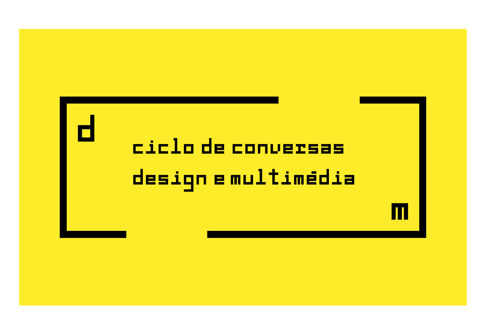
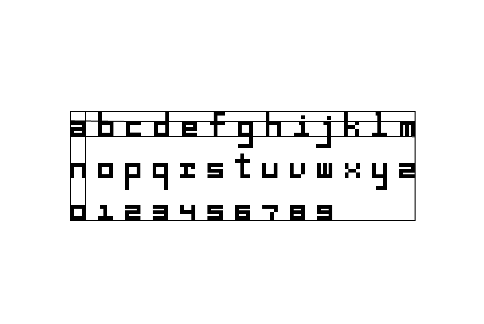
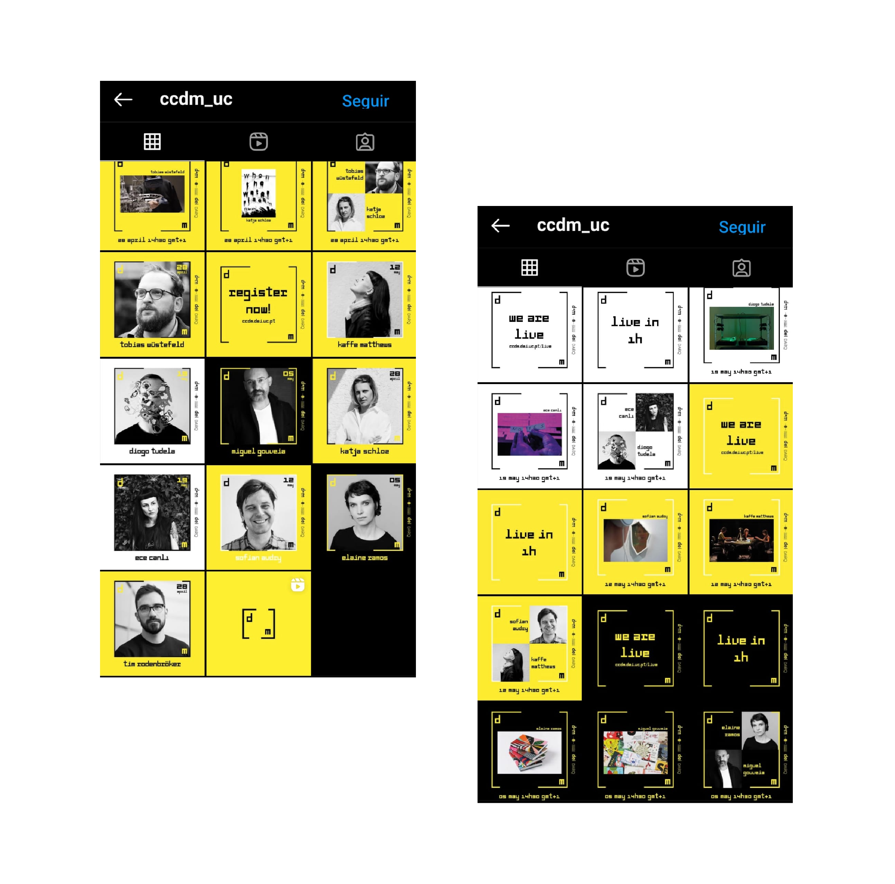
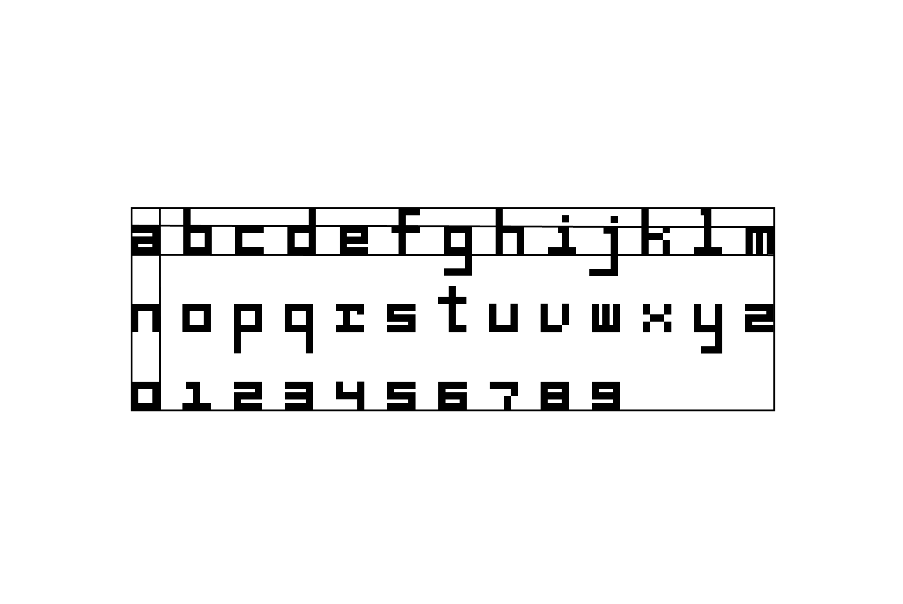
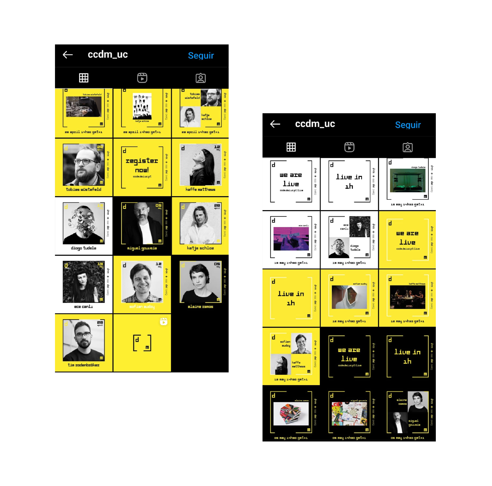
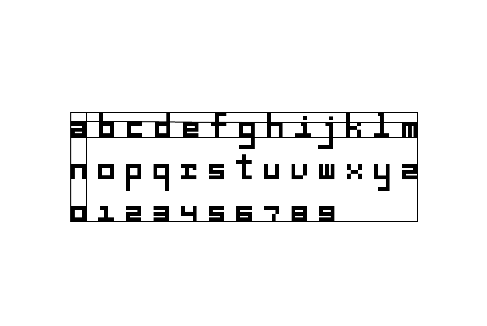
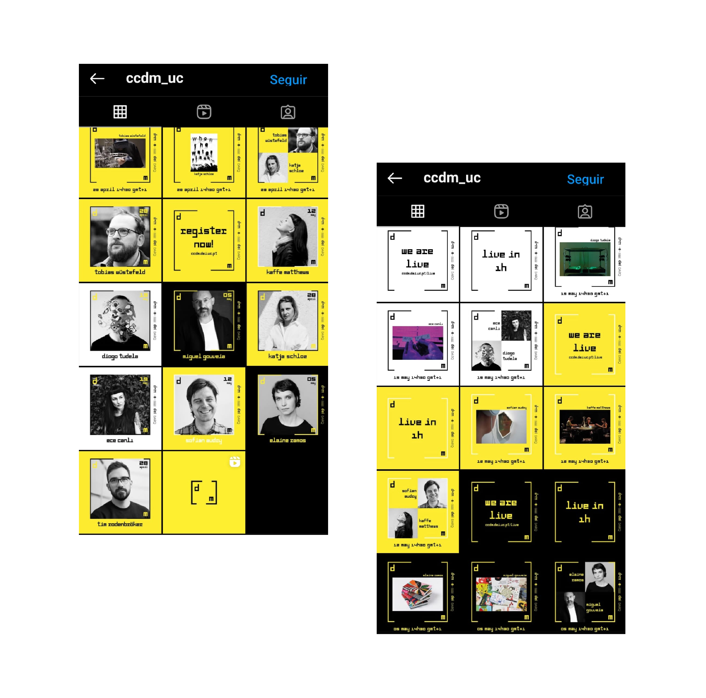

CCDM
Visual Identity
Web Design
2021


CONTEXT
Ciclo de Conversas Design + Multimédia 2021 Edition — Visual Identity
COLLABORATION
Fábio Gouveia
It was created a visual identity for 2021 edition of the Ciclo de Conversas Design + Multimédia in the University of Coimbra
For that, it was created a modular, square, robust font present throughout the identity. All the communication materials are wrapped in the event logo that acts as a container. The website is also wrapped by the logo that adapts to all screen formats and receives the information on it.
TOOLS/LANGUAGES
HTML, CSS, JavaScript, Adobe Illustrator, InDesign


 

Website Link


Website Link


Website Link